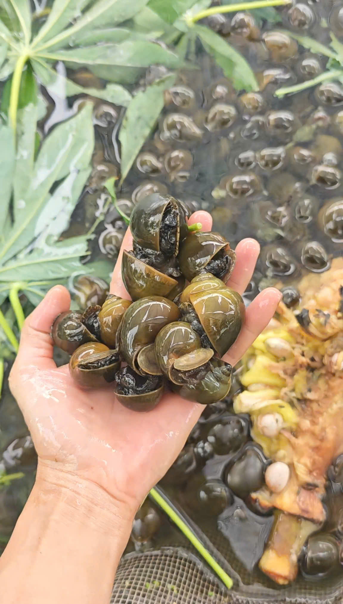
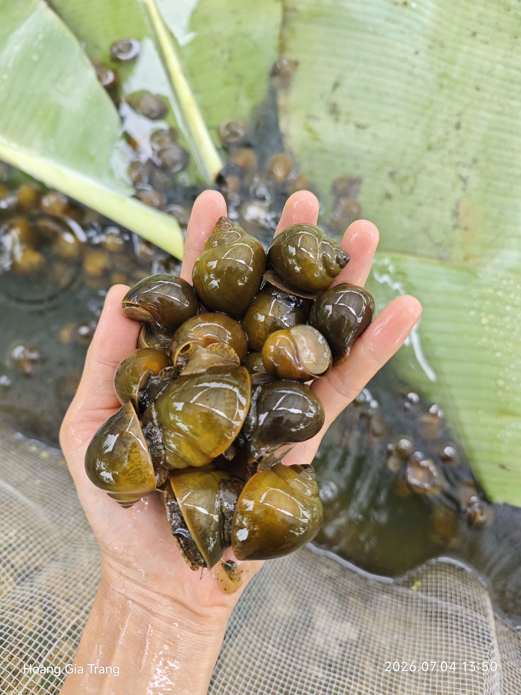
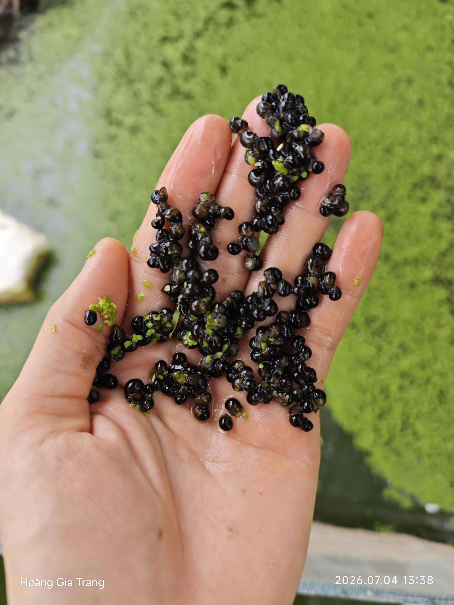
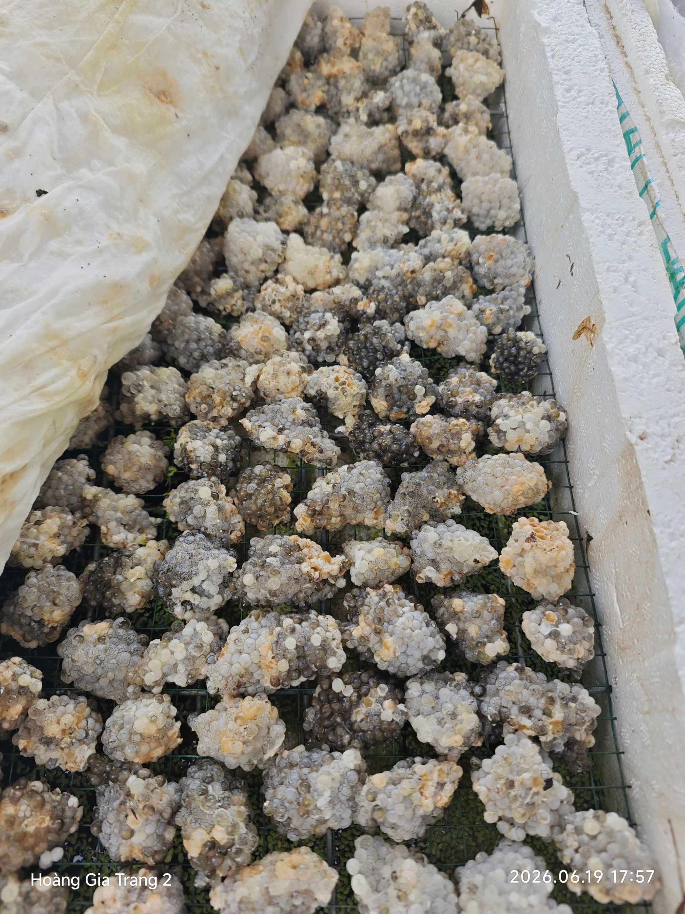
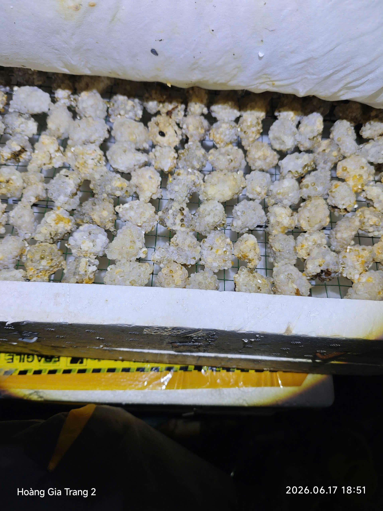
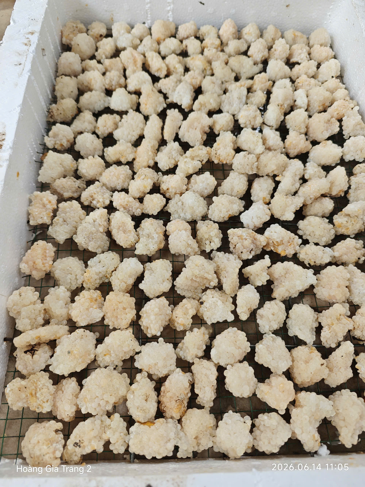

Có những bữa ăn nhìn đầy đủ nhưng lại khó biết rõ nó đến từ đâu và đã trải qua những gì trước khi đến bàn ăn. Đôi khi, điều chúng ta mong chỉ là một bữa ăn đơn giản, từ những thực phẩm cơ bản, ít qua xử lý và rõ ràng về nguồn gốc.
Các sản phẩm sạch và theo mùa tại Hoàng Gia Trang

Rau củ quả theo mùa, canh tác tự nhiên và hạn chế hóa chất.


Cá nuôi sinh thái trong ao tự nhiên tại farm.








Ốc nhồi sạch nuôi trong môi trường tự nhiên.


Hoa sen và các sản phẩm theo mùa từ đầm sen.


Măng tươi khai thác tự nhiên theo mùa vụ.

Vịt nuôi thả tự nhiên trong khuôn viên farm.
Một vài khoảnh khắc tại Hoàng Gia Trang